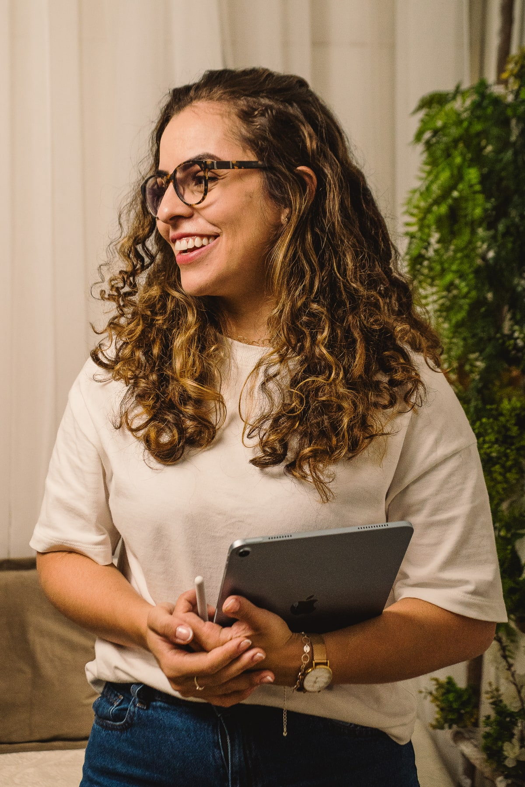
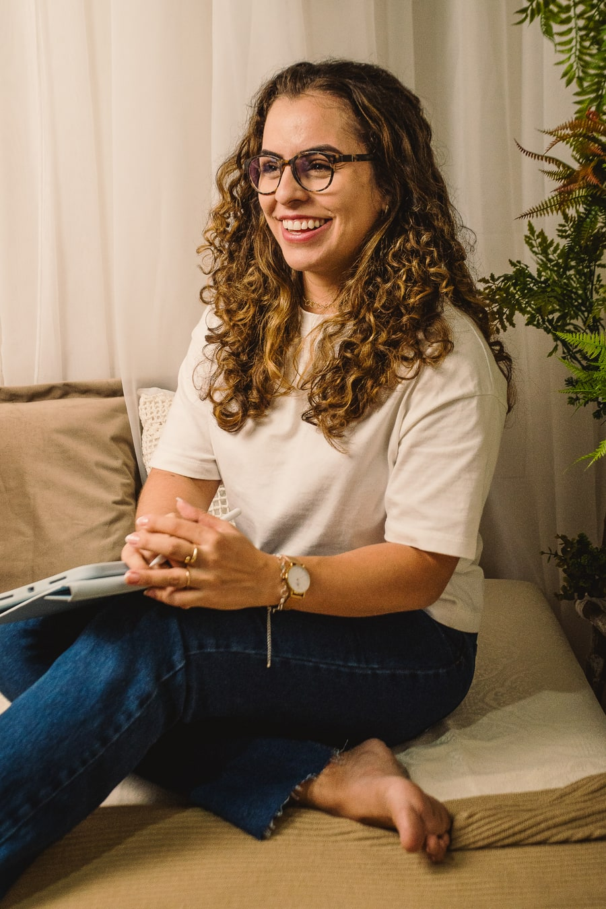

play_arrow
Bem-estar
Acompanhamento clínico fundamentado em ciência, ética e presença. Para pessoas que desejam amadurecer emocionalmente, fortalecer relações e viver com mais verdade e profundidade.

Vídeos breves para acolher pensamentos, emoções e pequenas pausas de cuidado ao longo do dia.



Acredito que a vida não pede perfeição — pede presença e um olhar atento a si e ao mundo. E foi entendendo isso, primeiro na minha própria história, que encontrei meu caminho na Psicologia.
Sou uma mulher de fé, esposa, mãe e psicóloga clínica. Minha vida pessoal e profissional caminham juntas, atravessadas pela busca por virtudes, maturidade emocional, sentido e construção diária. Não acredito em soluções prontas nem em fórmulas mágicas. Acredito em processos — reais, imperfeitos e profundamente transformadores.
Minha prática clínica é fundamentada em ciência psicológica, em estudo constante e na responsabilidade ética que a profissão exige. Acredito que fé e ciência não se anulam — podem caminhar juntas quando há maturidade, respeito e compromisso com o cuidado humano.
Venho de uma família batalhadora, onde aprendi sobre amor, apoio, limites, imperfeições humanas e a importância de ter um lar emocional seguro. As vivências de dor e sofrimentos atravessados na minha trajetória ampliaram ainda mais minha compreensão sobre processos, finitude, luto, esperança e fé. E hoje, isso atravessa minha escuta clínica com respeito, delicadeza e responsabilidade.
Acredito também na leveza. No humor. Na alegria possível, mesmo quando a vida nos atravessa com dor. Para mim, maturidade emocional não significa viver sério o tempo todo — significa sustentar a vida com profundidade sem perder a capacidade de sorrir, recomeçar e encontrar sentido no caminho.
Antes da Psicologia, trilhei o Direito. Finalizei ambos simultaneamente. Mas foi ao entrar em contato com a escuta e as dificuldades humanas que reconheci meu propósito: caminhar ao lado de pessoas em seus processos de crescimento, dor, reconstrução e amadurecimento.
Hoje meu trabalho é voltado para minha paixão pelo desenvolvimento pessoal, acompanhando principalmente mulheres adultas — muitas vezes fortes por fora e sobrecarregadas por dentro. Mulheres que desejam amadurecer emocionalmente, fortalecer relações, viver a maternidade com mais equilíbrio, melhorar a autoestima e construir uma vida com mais sentido, presença e verdade.
Não prometo soluções rápidas.
Não ofereço respostas prontas.
Ofereço presença, escuta qualificada, fundamentação científica, direção e processo.
Porque viver bem não é viver sem desafios. É aprender a atravessá-los com sentido, maturidade e, às vezes, até com um pouco mais de leveza e alegria.
Modalidades de atendimento pensadas para se adaptar à sua necessidade e rotina.
Um espaço exclusivamente seu. Acompanhamento clínico para autoconhecimento, amadurecimento emocional, ansiedade, autoestima, transições de vida e construção de uma existência mais autêntica e significativa.
Um espaço de escuta para os dois. Acompanhamento especializado para melhorar a comunicação, resolver conflitos, fortalecer vínculos e reconstruir a conexão com empatia e responsabilidade afetiva.
Trabalho com o sistema familiar como um todo. Acompanhamento para famílias que enfrentam conflitos, dificuldades de comunicação, crises ou que desejam construir um ambiente emocional mais seguro e saudável para todos.
A transformação pessoal é uma jornada íntima. Leia como o espaço terapêutico tem auxiliado pacientes a reescreverem suas histórias com mais leveza.
Encontrei nas sessões um porto seguro. A Mariana tem uma escuta que vai além das palavras, ela consegue organizar o caos que eu sentia por dentro.
Agende sua primeira consulta ou tire suas dúvidas. O atendimento via WhatsApp garante uma resposta rápida, discreta e humanizada.
Estou em Bragança Paulista, mas posso te atender de onde você estiver.
Explore conteúdos sobre saúde mental, bem-estar e autoconhecimento, pensados para o seu dia a dia.

Descubra como o processo de olhar para si mesmo pode transformar a maneira como você se relaciona com o mundo.

Pequenas mudanças na sua rotina podem gerar grandes impactos na sua saúde mental e equilíbrio emocional.

Como expressar suas necessidades de forma clara e empática para fortalecer os vínculos com as pessoas que você ama.